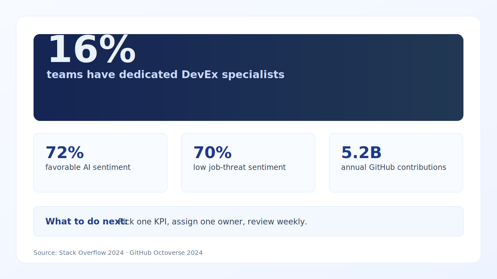

Use this template weekly to detect delivery drift early and drive action. Keep it simple: 5 metrics, 5 owners, 5 decisions.
What high-signal CTO scorecards include
Updated with current benchmarks and practical implementation guidance for 10–100 person teams.
What is working now
- Board reporting is moving toward fewer but more decision-useful indicators.
- Developer experience is now a measurable system, not just sentiment.
- AI capability is being tracked as a delivery lever with risk controls.
Evidence and benchmarks
- 16% of companies report dedicated DevEx/productivity specialists (JetBrains, 2024). Source
- 72% of developers are favorable or very favorable to AI tools (Stack Overflow, 2024). Source
- 70% of professional developers do not see AI as a threat to their job (Stack Overflow, 2024). Source
- 3,266 practitioners in GitLab DevSecOps survey sample (GitLab survey hub). Source
Execution playbook (next 30 days)
- Keep executive scorecard to 8–12 KPIs across delivery, reliability, quality, and business impact.
- Pair lagging business outcomes with leading engineering indicators.
- Review monthly at leadership level, weekly at team level.

Data credibility note: Benchmarks are from reputable 2023–2026 sources where available; older baselines are included only when still industry-standard references.
Citations